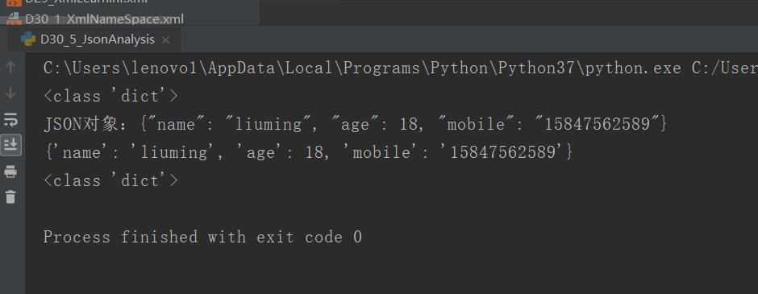
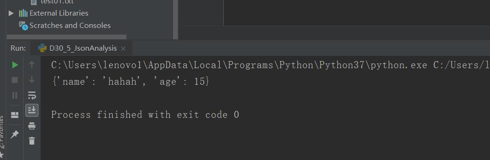

原文连接:https://www.cnblogs.com/ruigege0000/p/11774726.html
一、在线工具
1.https://www.sojson.com/
2.http://www.w3cshool.com.cn/json/
3.http://www.runoob.com/json/json-tutorial.html
二、JSON（JavaScriptObjectNotation）
1.json格式是一个键值对形式的数据集
（1）key:字符串（2）value:字符串，数字，列表，json
（3）json使用大括号包裹（4）键值对直接用逗号隔开
2.json和python格式的对应
（1）字符串-字符串（2）数字-数字（3）队列-list（4）对象-dict（5）布尔值-布尔值，不过python中的布尔值首字母是大写的
3.python for json
（1）json包
（2）json和python对象的装换
json.dumps():对数据编码，把python格式转换为json格式
json.loads():对数据进行解码，把json格式转换为python格式
import json
student={
"name":"liuming",
"age":18,
"mobile":"15847562589"
}
print(type(student))
stu_json = json.dumps(student)
# print(stu_json)
print("JSON对象：{0}".format(stu_json))
stu_dict = json.loads(stu_json)
print(stu_dict)
print(type(stu_dict))

（3）python读取json文件
json.dump():把内容写入文件
json.loads():把json文件内容读入python
data = {"name":"hahah",
"age":15
}
with open("t.json","w") as f:
json.dump(data,f)#将python数据转换成json格式写到文件f中去
with open("t.json","r") as f:
d = json.load(f)
print(d)

三、正则表达式
1.用于使用单个字符串来描述，匹配符合某个规则的字符串，常常用来检索，替换某些模式的文本
2.正则的写法
.(点号)：表示任意字符，除了\n，比如：查找所有的一个字符\.
[]:匹配中括号中列举的任意字符，比如：[L,Y,0],
\d:任意一个数字
\D:除了数字都可以
\s:表示空格，tab键
\S:表示空白符号
\w:单词字符，就是a-z.A-Z,0-9,_
\W:除了单词字符
*：表示前面的内容重复零次或者多次
四、源码
D30_5_JsonAnalysis.py
D30_6_RegularExpression.py
https://github.com/ruigege66/Python_learning/blob/master/D30_5_JsonAnalysis.py
https://github.com/ruigege66/Python_learning/blob/master/D30_6_RegularExpression.py
2.CSDN：https://blog.csdn.net/weixin_44630050（心悦君兮君不知-睿）
3.博客园：https://www.cnblogs.com/ruigege0000/
4.欢迎关注微信公众号：傅里叶变换，个人公众号，仅用于学习交流，后台回复”礼包“，获取大数据学习资料